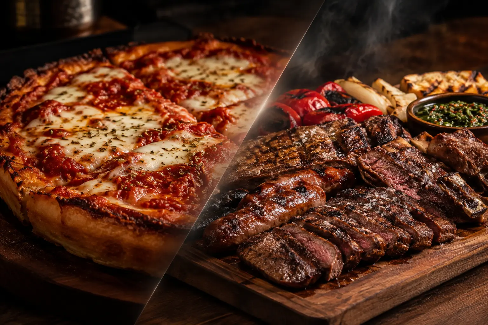
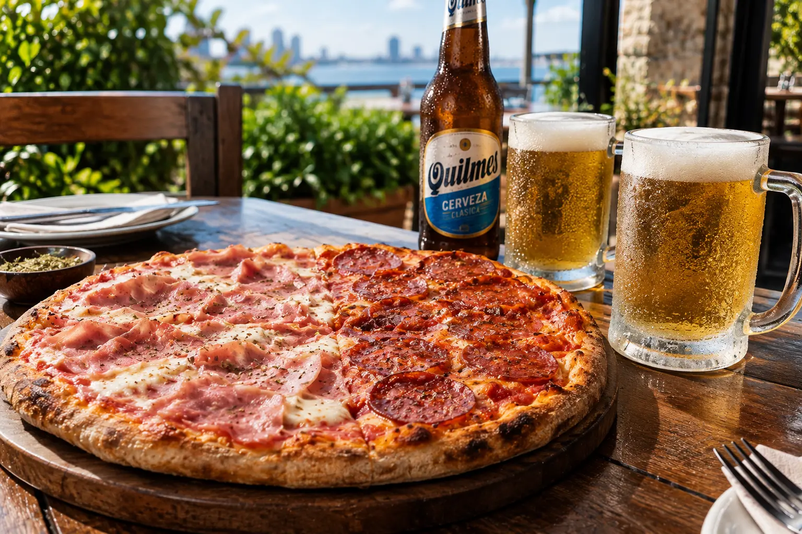

Cafeterías
La tradición del café porteño, sus bares históricos y las medialunas.

La tradición del café porteño, sus bares históricos y las medialunas.

Una de las grandes tradiciones gastronómicas de la ciudad.

Un ritual gastronómico que reúne a familiares y amigos.

La gastronomía argentina está profundamente influenciada por las culturas española e italiana, cuyas tradiciones llegaron con las grandes oleadas migratorias.
De España heredamos los guisos y las empanadas. La inmigración italiana popularizó las pastas, las pizzas, los ñoquis y las milanesas.
Estas costumbres se fusionaron con ingredientes y tradiciones locales, dando origen a una identidad culinaria propia.